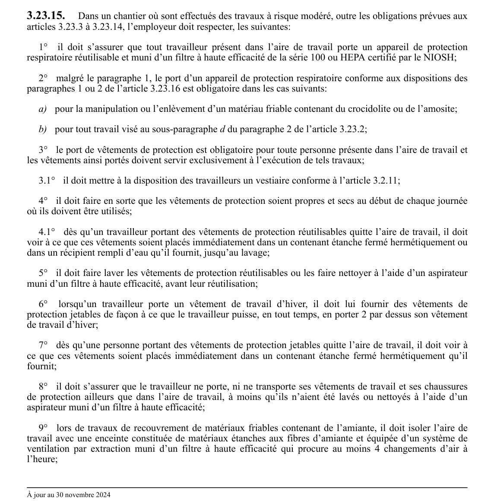

art-3.23.15-CSTC : dans un chantier où sont effectués des
Dans un chantier où sont effectués des travaux à risque modéré, outre les obligations prévues aux articles 3.23.3 à 3.23.14, l'employeur doit respecter, les suivantes: 1° il doit s'assurer que tout travailleur présent dans l'aire de travail porte un appareil de protection respiratoire réutilisable et muni d'un filtre à haute efficacité de la série 100 ou HEPA certifié par...
🌐 LegisQuébec · 📄 PDF officiel
Texte officiel
Dans un chantier où sont effectués des travaux à risque modéré, outre les obligations prévues aux articles 3.23.3 à 3.23.14, l’employeur doit respecter, les suivantes:
1° il doit s’assurer que tout travailleur présent dans l’aire de travail porte un appareil de protection respiratoire réutilisable et muni d’un filtre à haute efficacité de la série 100 ou HEPA certifié par le NIOSH;
2° malgré le paragraphe 1, le port d’un appareil de protection respiratoire conforme aux dispositions des paragraphes 1 ou 2 de l’article 3.23.16 est obligatoire dans les cas suivants:
a) pour la manipulation ou l’enlèvement d’un matériau friable contenant du crocidolite ou de l’amosite;
b) pour tout travail visé au sous-paragraphe d du paragraphe 2 de l’article 3.23.2;
3° le port de vêtements de protection est obligatoire pour toute personne présente dans l’aire de travail et les vêtements ainsi portés doivent servir exclusivement à l’exécution de tels travaux;
3.1° il doit mettre à la disposition des travailleurs un vestiaire conforme à l’article 3.2.11;
4° il doit faire en sorte que les vêtements de protection soient propres et secs au début de chaque journée où ils doivent être utilisés;
4.1° dès qu’un travailleur portant des vêtements de protection réutilisables quitte l’aire de travail, il doit voir à ce que ces vêtements soient placés immédiatement dans un contenant étanche fermé hermétiquement ou dans un récipient rempli d’eau qu’il fournit, jusqu’au lavage;
5° il doit faire laver les vêtements de protection réutilisables ou les faire nettoyer à l’aide d’un aspirateur muni d’un filtre à haute efficacité, avant leur réutilisation;
6° lorsqu’un travailleur porte un vêtement de travail d’hiver, il doit lui fournir des vêtements de protection jetables de façon à ce que le travailleur puisse, en tout temps, en porter 2 par dessus son vêtement de travail d’hiver;
7° dès qu’une personne portant des vêtements de protection jetables quitte l’aire de travail, il doit voir à ce que ces vêtements soient placés immédiatement dans un contenant étanche fermé hermétiquement qu’il fournit;
8° il doit s’assurer que le travailleur ne porte, ni ne transporte ses vêtements de travail et ses chaussures de protection ailleurs que dans l’aire de travail, à moins qu’ils n’aient été lavés ou nettoyés à l’aide d’un aspirateur muni d’un filtre à haute efficacité;
9° lors de travaux de recouvrement de matériaux friables contenant de l’amiante, il doit isoler l’aire de travail avec une enceinte constituée de matériaux étanches aux fibres d’amiante et équipée d’un système de ventilation par extraction muni d’un filtre à haute efficacité qui procure au moins 4 changements d’air à l’heure;
9.1° lors de travaux de manipulation ou d’enlèvement de matériaux friables contenant de l’amiante dont le volume de débris n’excède pas 0,03 m , il doit isoler l’aire de travail avec une enceinte constituée de matériaux étanches aux fibres d’amiante et équipée d’un système de ventilation par extraction muni d’un filtre à haute efficacité qui procure au moins 4 changements d’air à l’heure;
9.2° lors de travaux d’enlèvement de matériaux friables contenant de l’amiante, dans une zone de travail isolée de la zone respiratoire du travailleur, il doit, lorsque le travailleur utilise un sac à gants, s’assurer:
a) qu’il est utilisé aux seules fins et conditions pour lesquelles il a été conçu, conformément aux instructions du fabricant;
b) qu’il n’est pas réutilisé une fois rempli;
c) qu’il n’est pas utilisé si les travaux risquent de ne pas permettre de maintenir son herméticité, notamment en raison de l’emplacement du tuyau, la détérioration de l’isolant ou la température du tuyau, du conduit ou de la structure;
d) que, avant le démantèlement du sac à gants, sont encapsulées toute partie du tuyau où des matériaux isolants qui sont susceptibles de libérer des fibres d’amiante et que le sac à gants est scellé au-dessus des débris de matériaux de manière à isoler les débris de son compartiment supérieur;
10° lors de travaux d’enlèvement de faux plafonds en vue d’accéder à une zone de travail où se trouvent des matériaux friables contenant de l’amiante, il doit protéger le système de ventilation du bâtiment de toute contamination et isoler l’aire de travail avec une enceinte constituée de matériaux étanches aux fibres d’amiante et équipée d’un système de ventilation par extraction muni d’un filtre à haute efficacité qui procure au moins 4 changements d’air à l’heure;
11° il doit installer une affiche à chaque accès de travail; cette affiche doit être de couleur jaune, mesurer 500 mm de hauteur et 350 mm de largeur et indiquer, au moyen de caractères de couleur noire dont les dimensions sont ci-dessous précisées, les informations suivantes dans le même ordre:
12° en l’absence de l’enceinte visée aux paragraphes 9, 9.1 et 10, il doit délimiter l’aire de travail à l’aide de signaux de danger.
Texte de l’article 3.23.15 CSTC, extrait de la couche texte du PDF officiel (page 107), sans OCR ni retouche. La capture ci-dessous et le PDF font foi.
{kind=link}

Toucher l'image pour l'agrandir🔗 CSTC.pdf : page 107 · texte à jour au 30 novembre 2024
📚 Source légale : D. 54-90, a. 3; D. 459-99, a. 11; D. 885-2001, a. 373; D. 393-2011, a. 16; D. 48-2022, a. 8; D. 645-2022, a. 7. · LégisQuébec
Voir aussi
- art. 3.23.14.1
- art. 3.23.15.1
- ⚖️ Loi habilitante : LSST
- ↑ Section 3 : Chantiers de construction
Pages qui pointent ici (5)
- art-3.23.14.1-CSTC : dans un chantier où sont effectués des Recueil législatif
- art-3.23.15.1-CSTC : dans un chantier où sont effectués des Recueil législatif
- art-3.23.16-CSTC : dans un chantier où sont effectués des Recueil législatif
- art-3.23.16.1-CSTC : l'employeur qui effectue des travaux de manipulation Recueil législatif
- CSTC : Section 3 : Chantiers de construction Recueil législatif